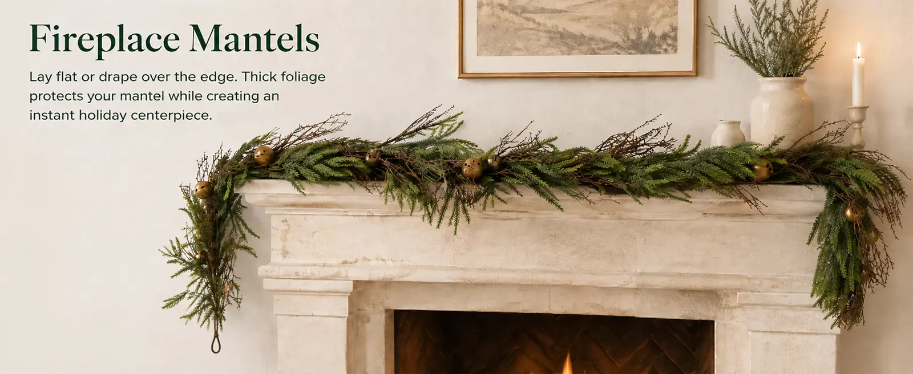
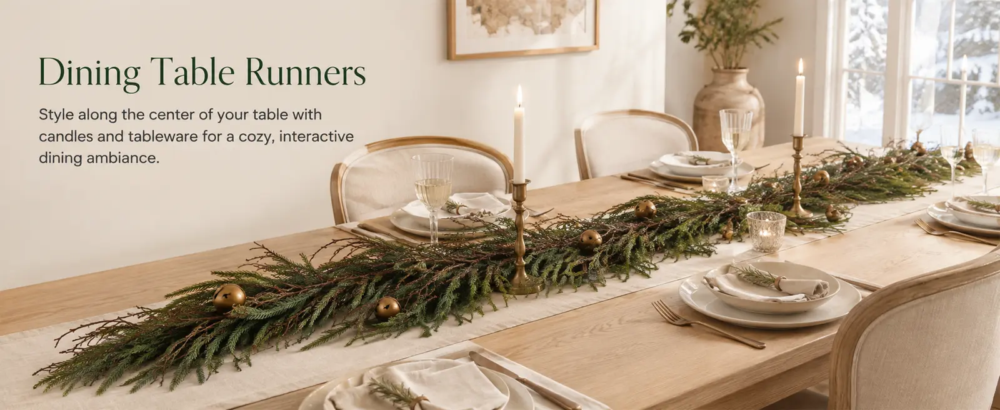
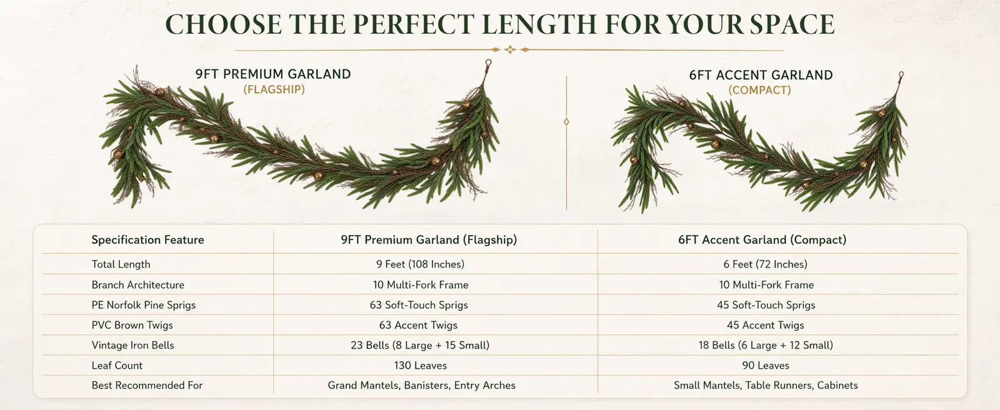
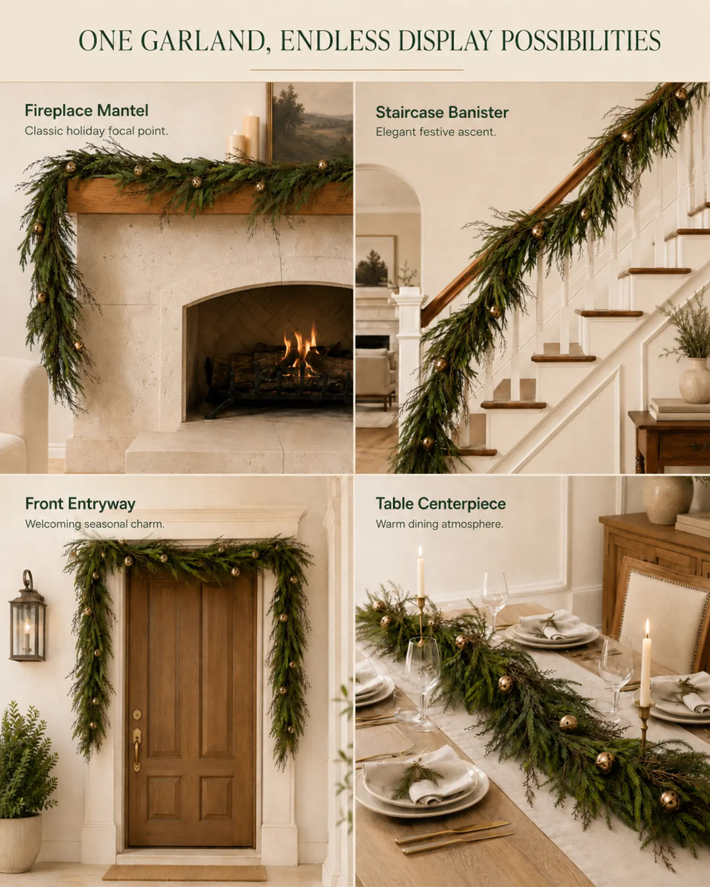
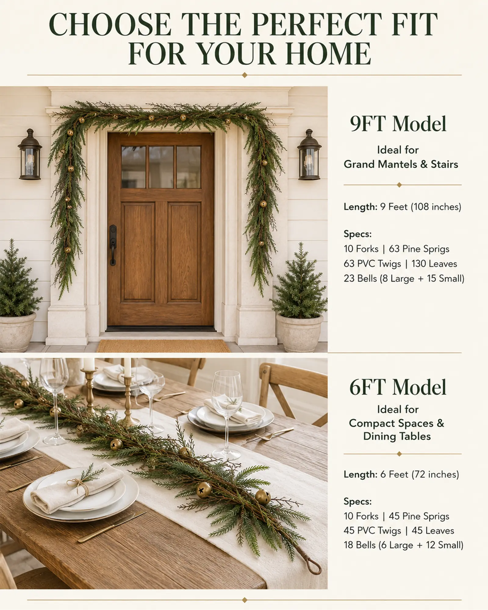

Skip to content
ZCF
.
Home
Fashion
Products
About
View Work
→
← Home
/
Products
/
Greenery
poklea Christmas Pine Garland
Greenery · 19 images
← Back to results
A+
Main Images
Secondary Images
A+



Main Images
Secondary Images


← Previous project
VoxCynHue Christmas Floral Garland
Next project →
Halloween Pumpkin Surprise Capsules
← Back to results
Return to Home
↗
←
→
Open full-size
×